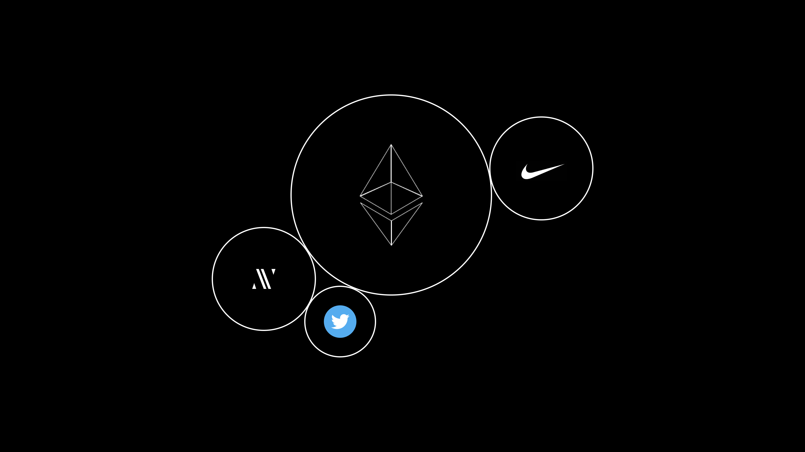
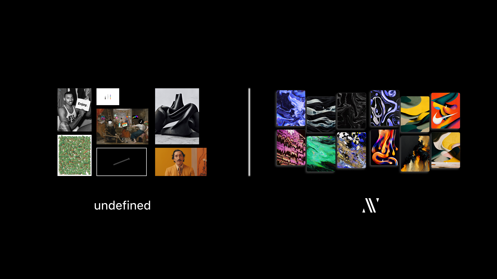
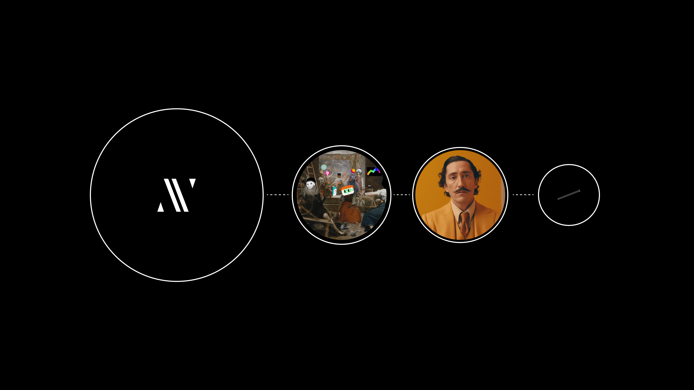
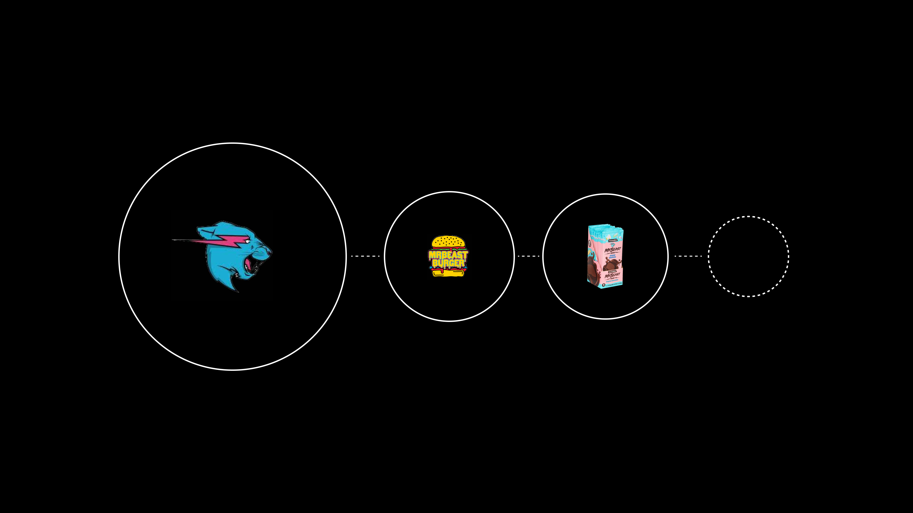
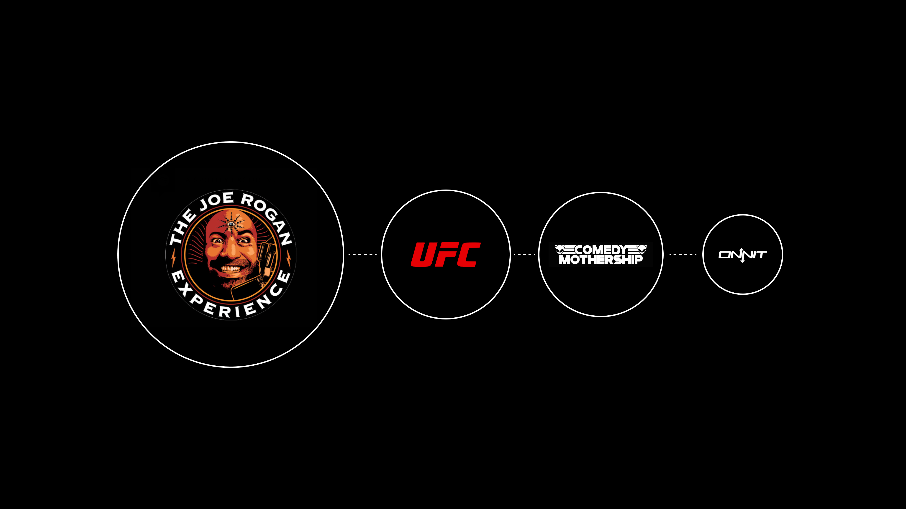
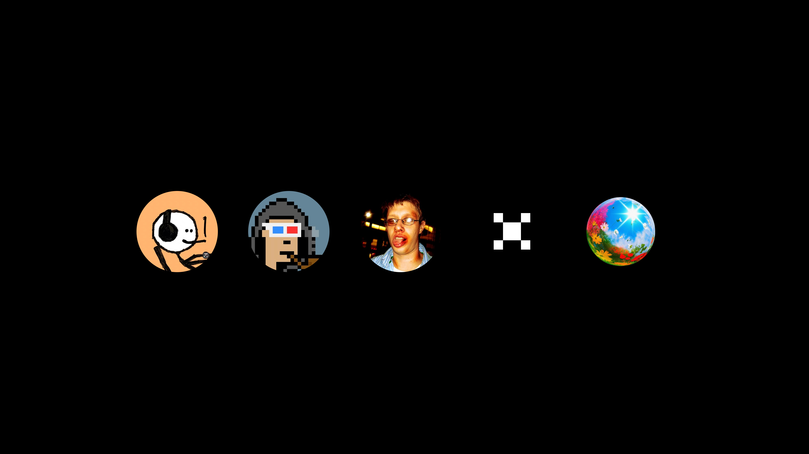

Naked blockchains await us… and some will have you believe that you don’t need your own signature to properly tag them.
An artist, in this essay, is defined as a creator of ‘imagined data’. This means a person who thinks of creative ideas, projects, products, etc and then manifests them into reality for show and tell.
A brand, in this essay, is defined as an aesthetic circumference for containing those creations. It’s a vessel.
Nike does not sell software from which you can broadcast your ideas. Twitter does not sell tennis shoe. And Ethereum provides you something else. They all surround ‘aesthetics’ though - whether physical, digital, intellectual, or some combination.
Somebody (or many bodies) thought of a creative idea and then needed to put a fence around it so the cows wouldn’t wander off. It is no different for the artist, but many reject this truth.
Within the term brand there are certain considerations:
One must broaden their understanding of brand here. Visual appearance is certainly an undeniable aspect. However, I want you to think of brand in the light of communication, or messaging, or embodied philosophy.
The artist is the life force, and the brand is their skin that walks into the world. Let’s look at an example.
One the fastest rising creatives in the fashion world at present.
Colm Dillane is the artist behind the brand. Through his use of KidSuper as a vessel for his creative pursuits, he has gone on to become a designer for Louis Vuitton and produce two shows at Paris Fashion Week. He has his own clothing line and a creative studio as well.
Colm’s name is probably not recognized by many of his customers, but KidSuper… they all yearn for it, signal themselves with it, but it’s all Colm’s aesthetic. Sure, now, people would buy Clothes by Colm. But before his rise… you’re kidding yourself.
KidSuper is an aesthetic circumference for Colm’s own tastes and imagined data. Therefore it can include or exclude whatever he wants. It is not some all consuming capitalistic demon; it is a vessel for Colm to be a professional artist.
In the onchain era, bodies of work will reside permanently in the public ledger. At first it could lead an artist to fear experimenting, but this is shortsighted.
If we used KidSuper as an example here the scenario I need you to imagine is that Colm was struck with inspiration to work on an entirely different product line. Instead of feeling pressured to remain ‘true’ to KidSuper’s aesthetic range, he can just create the new product outside of the brand. In fact, if he was onchain, he could spin up a new wallet and test it out there.
Think of the brand as a high tech cyborg for a minute. Your new and possibly crazy ideas are potential upgrades to your robot. But instead of plugging them in right away and risking short circuiting, you try them out on test dummies. If you like what you’ve seen then you go upgrade your vessel. If you don’t like it then you just leave it out.
If your brand resides onchain, then Twitter is the lab you get to experiment within. I use this method for my work and have found at minimum a 50x in productivity, clarity of voice, and courage to create.
Here is one example of brand benefitting your experimental nature as an artist.
On the right side we have the brand I am building, Abstraverse*. *On the left we have other works I have made during, before, and after the former.
Think in the mind of a potential collector of mine:
The brand is a place for me to express myself more thoughtfully. It is a place for me to be more welcoming to outsiders. It does not interfere with my creative curiosities or degrade my authenticity; it enhances them.
An artist can not be dumb. You have chosen a field with a very small professional conversion percentage. And you have chosen an industry that takes advantage of the value creator to the nth degree.
Brand is a way to bridge some of these gaps. It is a vertex from which you can plot new points as you climb the axis. This mechanism allows you to guide others into your more layered aesthetics and interests.
Here are some examples.
If you enjoyed Abstraverse as a collector of mine then it wouldn’t be unreasonable for you to check out my webcore art. Assuming you enjoyed that as well then you would start to check out my ai work, and on and on you’d go down the rabbit hole.
If you enjoy Mr. Beast videos (a brand that contains Jimmy’s aesthetics) then its likely you end up buying a Beast Burger one day. Assuming you enjoyed the burger it’s likely that you end up eating a Feastables bar as well.
The thing with a brand this scale is that each new plot has a massive advantage for success. This is a level of creative freedom that proves hating brand as an artist is hating opportunity itself. These are all just interests of an artist that would not have been accepted without that blue cat first.
One of the biggest brands in human history is Joe Rogan. It’s just the man’s name.
Fear Factor, Joe Rogan Experience, UFC, Comedy Mothership, Onnit; they all funnel into the name. This brand is the perfect example of simplicity.
If you watched fear factor then you probably checked out his podcast. If you listen to his podcast then you probably checked out a UFC fight or watched some stand up comedy. And if you enjoyed all of the verticals then you probably ordered a nootropic from his supplement company.
There is no limit to what a brand can include or how it can be designed.
If you want to be a professional artist you have to get paid for your work. In all the examples we have looked at, the common thread is that these individuals are being paid for their interests, through their brands. It is foolish to assume that as an artist this is beneath you.
There is no denying that corporate brands, especially in the west, are usually morally vacuous. A new flag is up every quarter paired with a social theme of the month sale. It is about quarterly returns and appeasing shareholders.
XCOPY is a famous cryptoartist. He will undoubtedly go down as one of the most significant artists of this era. His brand surrounds his art, his style, his creative commons values, etc. You should be able to see the difference between this and a corporate brand like Nike.
Without the name XCOPY how would he even begin to sell a body of work? How would he package his style and values so that others would understand his position? The brand is an extension of the artist. It is not a fiscal slave to suits that just want the number to go up.
XCOPY, Mr. Beast, Joe Rogan, Abstraverse, and KidSuper are all brands, but look entirely different and focus on different things.
This is going to be true of each artist or collective of artists.
A poorly drawn stick figure with 20k followers (on a new account). Sartoshi is a brand about fun, memes, and the mfers project.
A pseudonym character played by a real person. Deeze is a brand about crypto, nfts, memes, humor, weed, and decentralized finance.
A world famous artist. Beeple is a brand about the endurance of an artist, the digital art movement, and capturing the moments of history through art.
A collective of minds. Zora is a brand about onchain imagination, creative expression, and new internet fun
Sure, everyone could try to show up to a global marketplace with their government name, no consideration for their brand, and try to get paid for their interests through sheer will and chaotic endurance. Or they could create a mechanism for interacting with that global marketplace.
For an artist to hate branding is truthfully for them to just misunderstand what they are doing. They are already branding, just unconsciously and at less capacity.
Brand is an aesthetic circumference for the individual. It is a doorway for others to enter through. It is a vertex for development. And it is literally limitless in possibilities and directions for the artist to control.
Emerging artists should see branding as a creative opportunity rather than a constraint.